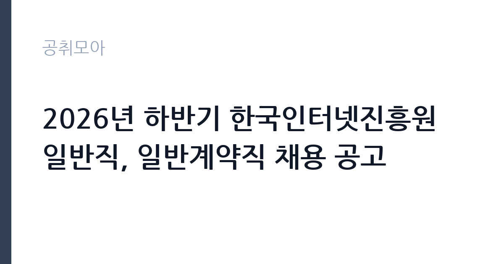

[공공기관] 2026년 하반기 한국인터넷진흥원 일반직, 일반계약직 채용 공고
한국인터넷진흥원 · 서울 · 마감 2026-10-06 (D-15) · 출처 잡알리오

한눈에 보는 모집 조건
| 기관 | 한국인터넷진흥원 |
|---|---|
| 공고명 | 2026년 하반기 한국인터넷진흥원 일반직, 일반계약직 채용 공고 |
| 고용형태 | 정규직 |
| 근무지 | 서울 |
| 게시일 | 2026-09-22 |
| 마감일 | 2026-10-06 (D-15) |
지원자격, 이렇게 읽으세요
- 공공기관 채용공시
- 세부 조건은 원문 공고문 확인
공통 응시요건은 결격 없음(부패방지법, 인사규정, 병역)과 입사 예정일부터 전일 근무가 가능해야 한다. 관건은 분야별 세부 요건이다. KISA 채용은 경영·정책·기술 분야로 나뉘고, 경력직급(4급 등) 채용에서는 해당 분야 실무 경력과 직무 연관성을 본다. 공인어학성적과 정보보안기사, CISSP 같은 자격증이 가점으로 작용하는 구조이므로, 본인 분야의 가점 항목을 원문 공고문에서 확인하고 빠짐없이 챙겨야 한다.
이 공고의 포인트
일반직과 일반계약직이 동시에 열린 것이 포인트다. 과거 공고에 따르면 일반계약직도 급여와 복리후생 등 근무조건이 일반직과 동일하게 적용된 사례가 있어, 트랙 선택의 폭이 넓다. KISA는 사이버위협 대응이라는 명확한 미션이 있는 기관이라, 정보보호 전공자와 보안 실무자에게는 전공 직결도가 높은 일터다. 나주 본원과 서울 분원 중 근무지가 나뉘므로 지원 분야의 근무지를 확인해야 한다.
전형은 어떻게 진행되나
전형은 서류전형과 필기전형, 면접전형의 3단계가 일반적이다. 서류에서는 직무 연관성과 경력을 보고, 필기에서는 전공 지식과 NCS 직업기초능력을 평가하며, 면접에서 직무 역량과 인성을 본다. 과거 공고에서는 입사 후 3개월 수습 기간에 급여의 80%를 지급하는 조건이 있었다. 세부 단계와 과목, 수습 조건은 이번 원문 공고문에서 확인해야 한다.
원문에서 확인한 전형 방식
º 연령, 학력, 성별 제한 없음 º 입사예정일부터 KISA 소속으로 전일 근무 가능한 자 º 부패방지 및 국민권익위원회의 설치와 운영에 관한 법률 제82조에 해당하지 않는 자 º 한국인터넷진흥원 인사규정 제7조(결격사유)에 해당하지 않는 자 º 병역법 제76조에서 정한 병역의무 불이행 사실이 없는 자
이런 분께 추천해요
- 정보보호·보안관제·침해대응 실무 경력을 가진 보안 전문가
- 개인정보 보호와 ICT 정책 연구에 관심 있는 경영·정책 분야 지원자
- 나주·서울 근무가 가능하고 공공기관 보안전문가 경력을 쌓으려는 사람
지원 전 체크리스트
- 일반직과 일반계약직 중 본인에게 맞는 트랙을 정하고 중복 지원 규정을 확인한다
- 지원 분야의 세부 응시요건과 우대·가점 항목을 원문에서 대조한다
- 어학성적과 자격증의 유효기간과 인정 범위를 점검한다
- 접수 마감일(10월 6일)과 전형 일정, 수습 조건을 원문에서 확인한다
모집 일정과 제출 타이밍
접수는 2026년 10월 6일에 마감된다. 이후 서류와 필기, 면접을 거쳐 하반기에서 연말 사이에 입사하는 흐름이 일반적이다. 필기전형이 포함되므로 접수 후 시간이 촉박하다. NCS와 전공 필기를 병행 준비해야 하며, 정확한 전형 일정과 입사 예정일은 원문 공고문에서 확인해야 한다.
직무 이해하기: 공공기관
KISA의 업무는 사이버위협 대응 최전선이다. 침해사고 분석과 피싱·스미싱 탐지체계 운영, 신규 취약점 분석과 신고포상제 운영이 기술 분야의일상이다. 정책 분야는 정보보호 중장기 전략과 개인정보 정책 연구, 국제협력을 맡고, 경영 분야는 기관 전략과 인사·예산을 다룬다. 24시간 대응 체계가 돌아가는 부서도 있어 교대·비상근무가 발생할 수 있다. 보안 이슈가 터지면 밤샘 대응도 있는 현업형 조직이다.
자기소개서 작성 팁
자기소개서는 직무 연관 경험으로 채워야 한다. 보안관제 로그를 분석한 경험, 모의해킹 프로젝트, 개인정보 보호 캠페인 같은 실전 사례를 앞세우는 것이 좋다. 정책 분야는 정보보호 이슈에 대한 본인의 분석 시각을 보여줘야 한다. KISA의 최근 대응 사례(보도된 침해사고 대응)를 언급하며 왜 이 기관인지 설명하면 설득력이 있다. NCS 자소서는 항목별 분량을 꽉 채우되 중복 서술을 피해야 한다.
면접 준비 포인트
면접에서는 전공 질문과 상황 질문이 함께 나온다. 기술 분야는 침해사고 시나리오(랜섬웨어 감염 시 초동 조치)를 묻고, 정책 분야는 개인정보 이슈에 대한 견해를 묻는다. PT 면접이나 토론이 포함될 수 있으므로 최근 보안 뉴스를 정리해야 한다. 교대·비상근무 가능 여부도 확인하므로, 현업 강도에 대한 각오를 솔직하게 밝히는 것이 좋다.
급여·근무조건 읽는 법
정확한 보수액은 원문 공고문의 급여 항목에서 확인해야 한다. KISA 급여는 진흥원 인사·급여 규정에 따르며, 시간외수당 등 법정수당은 별도 지급되는 구조다. 평균연봉 수준의 수치를 확정 자료 없이 인용하지 않으며, 알리오 경영공시의 기관 평균보수와 이번 공고의 초임 조건은 별개이므로 원문에서 확인하기 바란다. 경쟁률과 합격선은 공개되지 않으므로 원문에서 확인해야 한다.
자주 묻는 질문
- 일반직과 일반계약직의 차이가 무엇인가요?
일반직은 정규직, 일반계약직은 무기계약 성격으로 채용 트랙이 다르다. 과거 공고에서는 급여·복리후생 조건이 동일하게 적용된 사례가 있으나, 이번 공고의 조건은 원문에서 확인해야 한다. - 수습 기간이 있나요?
과거 공고에는 3개월 수습에 급여 80% 지급 조건이 있었다. 이번 공고의 수습 조건은 원문 공고문에서 확인해야 한다. - 근무지는 선택할 수 있나요?
나주 본원과 서울 분원 중 채용 분야별로 근무지가 정해지는 구조다. 본인 분야의 근무지와 입사 후 이동 가능성은 원문에서 확인해야 한다.
함께 보면 좋은 공고
[공공기관] 한국토지주택공사 개방형 직위(감사실장, 준법감시관) 공모 — 마감 2026-10-07[공공기관] 한국도로공사 비상임이사 공모 — 마감 2026-09-29[공공기관] 2026년 하반기 2차 중소벤처기업진흥공단 체험형 청년인턴(장애인) 채용 공고 — 마감 2026-10-12출처: 잡알리오 공개정보를 바탕으로 공취모아가 정리한 안내글입니다. 모집 조건·일정은 변경될 수 있으니 지원 전 반드시 원문 공고문을 확인하세요. 본 글은 정보 제공용이며 합격을 보장하지 않습니다.